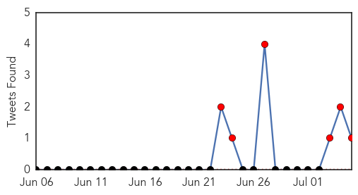
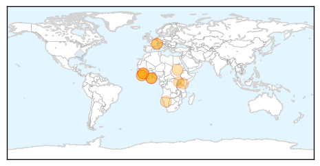
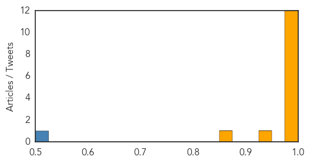

Yellow Fever
30-Day Web Trend
3 alerts, 0 warnings
30-Day Twitter Trend
0 alerts, 0 warnings

Article Locations

Article Confidences

Top Articles:
-
No articles found for Jul 05, 2014
Top Tweets:
-
No tweets found for Jul 05, 2014
Ebola
30-Day Web Trend
8 alerts, 6 warnings

30-Day Twitter Trend
6 alerts, 0 warnings

Article Locations
Article Confidences
Top Articles:
- 1.000
- Ebola plagues West Africa in worst ever outbreak
- 1.000
- Sudan Vision Daily
- 0.999
- Victoria doctor off to aid Ebola victims in West Africa
- 0.999
- West Africa gets help for "unprecedented" Ebola outbreak
- 0.997
- Red Cross removes staff from Ebola operations after Guinea knife threat
- 0.997
- Ebola problems highlighted in Sierra Leone
- 0.996
- Kenya : Ebola: Experts highlight problems in Sierra Leone
- 0.996
- Red Cross Halts Ebola Operations in Southeast Guinea After Threats
- 0.996
- Ebola scare: WHO to create sub-regional control centre in Guinea
- 0.995
- Combatting Ebola in Sierra Leone
- 0.991
- Ghana Ebola consensus concluded
- 0.986
- West African authorities adopt common strategy to fight Ebola
- 0.945
- Fear works against health workers trying to contain Ebola
- 0.873
- Experts link poaching to terror - World
Top Tweets:
- 0.767
- RT: Article in identifies challenges & strategies in efforts to control West Africa Ebola outbreak: http://t.co/bysAAxv…